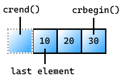

A biblioteca padrão do C++ fornece vários containers genéricos, funções que utilizam e manipulam tais containers, funções-objeto, cadeias de caracteres e streams genéricos, suporte para algumas facilidades da linguagem e funções de uso geral, como funções matemáticas.Os containers genéricos são uma implementação de elementos conhecidos em estrutura de dados. Diferentes containers compartilham uma mesma interface, o acesso é o mesmo. A escolha do uso geralmente depende da eficiência em determinadas tarefas que o container deverá desempenhar, o que está relacionado com a implementação interna da classe. Por exemplo, alguns containers são mais eficientes em busca e menos eficientes em inserções.
Ela também incorpora a biblioteca padrão do C90. Desta forma, as biblioteca-padrão do C sofreram uma adequação para pertencerem também ao espaço de nomes std: retirou-se o sufixo .h dos nomes dos arquivos de cabeçalho, e adicionou-se o prefixo c para indicar que pertence à linguagem C.Os algoritmos, containers e iteradores dessa biblioteca são baseados na STL, e por esse motivo esses dois termos são muitas vezes confundidos. O iterador é um conceito importante da STL, e, portanto, da biblioteca padrão. Ele permite que os algoritmos usem os containers de forma genérica.

Iostream
Declara objetos que controlam a leitura e a gravação nos fluxos padrão. Essa inclusão é geralmente o único cabeçalho necessário para executar a entrada e a saída de um programa C++.Os objetos se encaixam em dois grupos:
cin, cout, cerr e clog são orientados por byte, executando transferências convencionais de um byte por vez.
wcin, wcout, wcerr e wclog são orientados por largura, convertendo de e para os caracteres largos que o programa manipula internamente.
Após executar determinadas operações em um fluxo, como a entrada padrão, você não pode executar operações de uma orientação diferente no mesmo fluxo. Portanto, um programa não pode operar de forma intercambiável em cin e wcin, por exemplo.Todos os objetos declarados nesse cabeçalho compartilham uma propriedade peculiar: você pode presumir que eles foram construídos antes de qualquer objeto estático que você definir, em uma unidade de tradução que inclui iostream.
Da mesma forma, você pode presumir que esses objetos não são destruídos antes dos destruidores de qualquer um desses objetos estáticos que você definir. (Os fluxos de saída, entretanto, são liberados durante o encerramento do programa.) Portanto, é possível ler ou gravar com segurança nos fluxos padrão antes da inicialização do programa e após o encerramento do programa.No entanto, essa garantia não é universal. Um construtor estático pode chamar uma função em outra unidade de conversão.A função chamada não pode presumir que os objetos declarados nesse cabeçalho foram construídos, dada a ordem incerta na qual as unidades de tradução participam da construção estática. Para usar esses objetos em tal contexto, primeiro você deve criar um objeto da classe ios_base::Init.
Vector
Define o vetor de exemplo de classe de contêiner e diversos modelos de suporte.O vector é um contêiner que organiza os elementos de um determinado tipo em uma sequência linear. Ele permite acesso aleatório rápido a qualquer elemento, bem como adições e remoções dinâmicas em relação à sequência. O vector é o contêiner preferencial para uma sequência quando o desempenho de acesso aleatório é reduzido.
A classe de vetor da biblioteca padrão C++ é um modelo de classe para contêineres de sequência. Um vetor armazena elementos de um determinado tipo de maneira linear e permite o acesso aleatório rápido a qualquer elemento. Um vetor é o contêiner preferencial para uma sequência quando o desempenho de acesso aleatório é reduzido.
String
Define o modelo de classes do contêiner basic_string e diversos modelos de suporte.Para obter mais informações sobre basic_string, confira a classe basic_string.A linguagem C++ e a biblioteca C++ padrão dão suporte a dois tipos de cadeias de caracteres:
Matrizes de caracteres com terminação nula geralmente conhecidas como cadeias de caracteres C.
objetos de modelo de classe, do tipo basic_string, que lidam com todos os argumentos de modelo do tipo char.